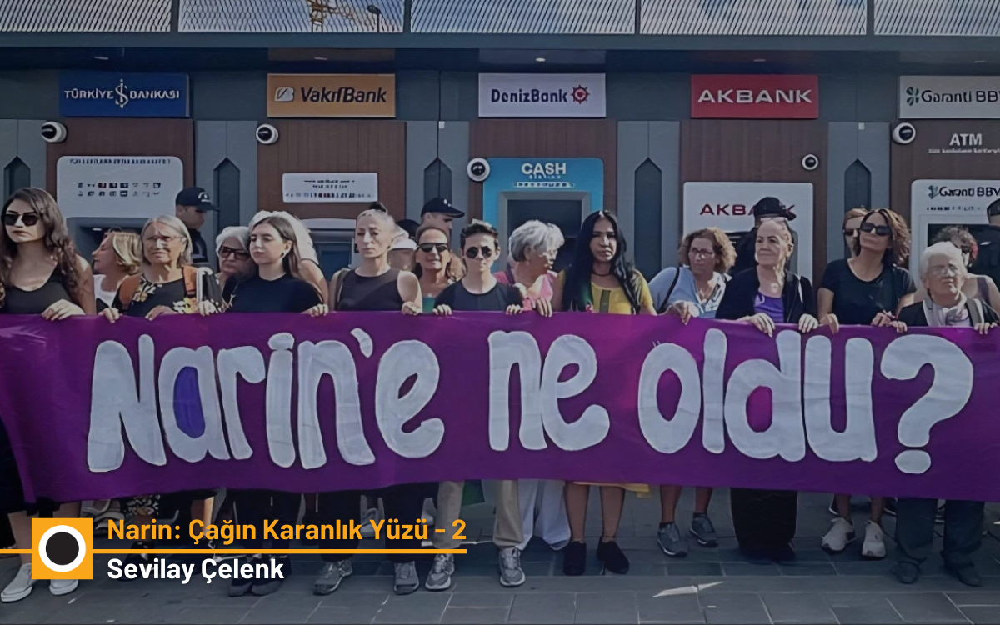

In the fourth part of the Narin Güran case, Ali Duran Topuz examines in detail how disinformation spread, how fake social media accounts steered public opinion, and how the…
This article analyzes how the developments of 31 August 2024, social media posts, and fabricated news shaped the investigation in the Narin Güran case, offering an extensive…
An analysis examining justice, media, and judiciary relations in the Narin Güran case through the lens of silence, the right to remain silent, and the presumption of…
An analysis that explores the pursuit of justice at the intersection of media, politics, and the judiciary — through the lenses of misinformation, prejudice, and conscience.
The murder of Narin Güran became the subject of one of the most mediatized cases of recent years. The trial began and ended, and three members of the family were sentenced…
Comparative analysis of the other reports (excluding the narrowed-base report) and legal assessment with the assistance of ChatGPT.
A scientific, impartial and fair comparison of three different reports submitted to the court in the Narin Güran murder case, with the help of ChatGPT.
The media and public opinion immediately removed him from the murder case by saying, ‘Nevzat would never dare to do such a thing.’
The effort to produce answers for the broad masses who reflected their unrestrained anger at the political power onto Narin’s family also prevented seeing the chain of…

Just like the mainstream media that could not get enough of spreading lies and sensational information about what happened to Narin, the media we call alternative also…
The fire of the police-thriller excitement sparked by the incident has burned out. Who cares about Tavşantepe Village, about a peasant family there? The journalists, the TV…
Not so long ago, only five months back, the murder of Narin Güran was one of the topics most dwelled upon by newspapers, news sites, and television channels. Not only…
A concept called “narrowed base” or “narrow area base” has entered our lives through the Narin Güran murder case. With this method, it is claimed that the locations of…
In fact, it was not only a child named Narin that was lost there, but also a village called Tavşantepe… I wanted to share this, thinking that perhaps you too might wish to…
If there were a courageous Arthur Miller in Turkey these days, he would write about another trial resembling the witch trials in Salem 400 years ago: the Narin Case that…
I am now a dead woman, a corpse, at the bottom of a well. It has been long since I took my last breath, my heart has long stopped, yet no one but my vile murderer knows what…
In the Narin murder case, what does it even mean to talk for hours on end, saying the most far-fetched things and then closing with “Here we are just discussing scenarios…
The death of Narin Güran has resurfaced the issue of how the media approaches women and child murders. While some newspapers used expressions such as “She became an angel”…